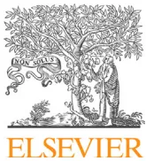

Guidelines
Carole Ichaia,*, Christophe Vinsonneaub,*, Bertrand Souweinec, Fabien Armandod, Emmanuel Canete, Christophe Clec'hf, Jean-Michel Constanting, Michaël Darmonh, Jacques Duranteaui, Théophile Gaillotj, Arnaud Garnierk, Laurent Jacobl, Olivier Joannes-Boyaum, Laurent Juillardn, Didier Journoiso, Alexandre Lautrettep, Laurent Mullerq, Matthieu Legrandl, Nicolas Leroller, Thomas Rimmelés, Eric Rondeaut, Fabienne Tamionu, Yannick Walravec, Lionel Vellyv Société française d'anesthésie et de réanimation (Sfar), Société de réanimation de langue française (SRLF), Groupe francophone de réanimation et urgences pédiatriques (GFRUP), Société française de néphrologie (SFN)
a IRCAN, Inserm U1081, CNRS UMR7284, service de réanimation polyvalente, CHU de Nice, 30, voie Romaine, 06000 Nice, France
b Service de réanimation, hôpital Marc-Jacquet, 77000 Melun, France
c Service de réanimation polyvalente, CHU de Nice, 30, voie Romaine, 06000 Nice, France
d Service de réanimation médicale, CHU de Clermont-Ferrand, 63000 Clermont-Ferrand, France
e Service de réanimation, hôpital Saint-Louis, Assistance Publique–Hôpitaux de Paris, 1, avenue Claude-Vellefaux, 75010 Paris, France
f Service de réanimation, hôpital d'Avicenne, Assistance Publique–Hôpitaux de Paris, 125, rue de Stalingrad, 93000 Bobigny, France
g Département de médecine périopératoire, hôpital Estaing, CHU de Clermont-Ferrand, 1, place Louis-Aubrac, 63003 Clermont-Ferrand, France
h Service de réanimation, hôpital de la Charité, CHU de Saint-Étienne, 44, rue Pointe-Cadet, 42100 Saint-Étienne, France
i Département d'anesthésie-réanimation, hôpital Kremlin-Bicêtre, Assistance Publique–Hôpitaux de Paris, 78, rue de la division du Général-Leclerc, 94270 Le Kremlin-Bicêtre, France
j Service de pédiatrie, hôpital Sud, CHU de Rennes, 16, boulevard Bulgarie, 35203 Rennes, France
k Service de pédiatrie, néphrologie, hôpital des Enfants, CHU de Toulouse, 330, avenue de Grande-Bretagne, 31059 Toulouse cedex, France
l Service d'anesthésie-réanimation, hôpital Saint-Louis, Assistance Publique–Hôpitaux de Paris, 1, avenue Claude-Vellefaux, 75010 Paris, France
m Service d'anesthésie-réanimation II, hôpital du Haut-Lévêque, CHU de Bordeaux, 33600 Pessac, France
n Service de néphrologie-dialyse, hôpital Édouard-Herriot, hospices civils de Lyon, 5, place d'Arsonval, 69003 Lyon, France
o Service de réanimation, hôpital européen Georges-Pompidou, Assistance Publique–Hôpitaux de Paris, 20, rue Leblanc, 75908 Paris, France
p Service de réanimation, hôpital Gabriel-Montpied, CHU de Clermont-Ferrand, 58, rue Montalembert, 63003 Clermont-Ferrand, France
q Service de réanimation, hôpital Carêmeau, CHU de Nîmes, 4, rue du Professeur-Robert-Debré, 30029 Nîmes, France
r Service de réanimation, centre hospitalier universitaire d'Angers, 4, rue Larrey, 49100 Angers, France
s Service d'anesthésie-réanimation, hôpital Édouard-Herriot, hospices civils de Lyon, 5, place d'Arsonval, 69003 Lyon, France
t Service de néphrologie, hôpital Tenon, Assistance Publique–Hôpitaux de Paris, 4, rue de la Chine, 75020 Paris, France
u Service de réanimation médicale, hôpital Charles-Nicolle, CHU de Rouen, 1, rue de Germont, 76031 Rouen, France
v Service d'anesthésie-réanimation, hôpital de la Timone, Assistance Publique–Hôpitaux de Marseille, 13000 Marseille, France
Carole Ichai.
Christophe Vinsonneau.
Lionel Velly (Sfar), Bertrand Souweine (SRLF).
Jean-Michel Constantin, Jacques Duranteau, Laurent Jacob, Olivier Joannes-Boyau, Didier Journois, Matthieu Legrand, Laurent Muller, Thomas Rimmelé.
Emmanuel Canet, Christophe Clec'h, Michaël Darmon, Alexandre Lautrette, Nicolas Lerolle, Fabienne Tamion.
Théophile Gaillot, Arnaud Garnier.
Laurent Juillard, Eric Rondeau.
☆ This article is being published jointly in Anaesthesia Critical Care & Pain Medicine and Annals of Intensive Care. Manuscript validated by the boards meeting of Sfar (19/06/2015) and SRLF (06/08/2015).
* Corresponding authors.
E-mail addresses: ichai@unice.fr (C. Ichai), christophe.vinsonneau@ch-melun.fr (C. Vinsonneau).
http://dx.doi.org/10.1016/j.accpm.2016.03.004
2352-5568/© 2016 The Authors. Published by Elsevier Masson SAS on behalf of the Société française d'anesthésie et de réanimation (Sfar). This is an open access article under the CC BY license (http://creativecommons.org/licenses/by/4.0/).
Please cite this article in press as: Ichai C, et al. Acute kidney injury in the perioperative period and in intensive care units (excluding renal replacement therapies). Anaesth Crit Care Pain Med (2016), http://dx.doi.org/10.1016/j.accpm.2016.03.004
A. Lautrette (Clermont-Ferrand), T. Rimmelé (Lyon), A. Garnier (Toulouse), T. Gaillot (Rennes).
J.M. Constantin (Clermont-Ferrand), L. Jacob (Paris), M. Darmon, (Saint-Étienne), J. Duranteau (Paris), N. Lerolle (Angers).
C. Clec'h (Avicenne), M. Legrand (Paris).
M. Darmon (Saint-Étienne), L. Muller (Nîmes).
M. Darmon (Saint-Étienne), O. Joannes-Boyau (Bordeaux).
E. Canet (Paris), D. Journois (Paris), A. Garnier (Toulouse), T. Gaillot (Rennes).
F. Tamion (Rouen), B. Souweine (Clermont-Ferrand), A. Garnier (Toulouse), T. Gaillot (Rennes).
E. Rondeau (Paris), C. Vinsonneau (Melun).
Fabien Armando (Nice), Yannick Walrave (Nice).
Clinical committee of reporting investigators (Sfar): D. Fletcher, L. Velly, J. Amour, S. Ausset, G. Chanques, V. Compere, F. Espitalier, M. Garnier, E. Gayat, J.Y. Lefrant, J.M. Malinovsky, B. Rozec, B. Tavernier.
Committee for reporting and evaluation (SRLF): L. Donetti, M. Alves, Tboulain, Olivier B. Rissaud, V. Das, L. De Saint, Blanquat, M. Guillot, K. Kuteifan, C. Mathien, V. Peigne, F. Plouvier, D. Schnell, L. Vong.
Board meeting of Sfar: C. Ecoffey, F. Bonnet, X. Capdevila, H. Bouaziz, P. Albaladejo, L. Delaunay, M.-L. Cittanova Pansard, B. Al Nasser, C.-M. Arnaud, M. Beaussier, M. Chariot, J.-M. Constantin, M. Gentili, A. Delbos, J.-M. Dumeix, J.-P. Estebe, O. Langeron, L. Mercadal, J. Ripart, M. Samama, J.-C. Sleth, B. Tavernier, E. Viel, P. Zetlaoui.
Board meeting of SRLF: P.-F. Laterre, J.-P. Mira, J. Pugin, X. Monnet, C.-E. Luyt, J.-L. Diehl, S. Dauger, J. Dellamonica, B. Levy, B. Megarbane, Pr Benoît Misset, H. Outin, F. Tamion, S. Valera.
Acute kidney injury (AKI) is a syndrome, which has progressed a great deal over the last 20 years. The decrease in urine output and the increase in classical renal biomarkers such as blood urea nitrogen (BUN) and serum creatinine have been largely used as surrogate markers for decreased glomerular filtration rate (GFR), which defines AKI. However, using such markers of GFR as criteria for diagnosing AKI has several limits including the difficult diagnosis of non-organic AKI, also called "functional renal insufficiency" or "pre-renal insufficiency". This situation is characterized by an oliguria and an increase in creatininemia as a consequence of a reduction in renal blood flow (RBF) related to systemic haemodynamic abnormalities. In this situation, "renal insufficiency" seems rather inappropriate as kidney function is not impaired. On the contrary, the kidney delivers an appropriate response aiming to recover optimal systemic physiological haemodynamic conditions. Considering the kidney as insufficient is erroneous because this suggests that it does not work correctly
whereas the opposite is occurring, because the kidney is healthy even in a threatening situation. With current definitions of AKI, normalisation of volaemia is needed before defining AKI in order to avoid this pitfall.
In addition, numerous data highlight that serum creatinine (SCr) has strong limitations which make it an imperfect surrogate marker for assessing GFR and consequently AKI.
However, because its use has long been standardized around the world and it is easy and inexpensive to measure, SCr remains the dominant renal biomarker used in the current definitions of AKI.
The literal translation between related French and English terminologies can be confusing (Fig. 1):
These different notions of acute kidney injury and damage have emerged over the last few years, partly due to the discovery of new biomarkers for renal function which allow clinicians to accurately assess kidney damage, and consequently renal dysfunction, before any subsequent change in the classical parameters of AKI.
The diagram consists of three concentric circles. The innermost circle is the smallest and is labeled "Acute Kidney Injury". The middle circle is larger and is labeled "Acute Kidney Damage". The outermost circle is the largest and is labeled "Acute Kidney Attack". This visualizes the progression from a specific injury to broader damage and then to a systemic attack.
Fig. 1. Acute kidney disease: from attack to dysfunction.
Clinicians must know that kidney injury is not synonymous with renal failure and that acute kidney damage and attack develop as part of the continuum of AKI. These notions are essential since they allow clinicians to describe the conditions in which a therapeutic action might avoid or reduce the risk of worsening ARF. Growing experimental and clinical research actively seeks to assess the role of these renal biomarkers in detecting early AKI.
The working method used to elaborate these recommendations is the GRADE® method. Following a quantitative literature analysis, this method is used to separately determine the quality of available evidence on the one hand, (i.e. a confidence estimation needed to analyse the effect of the quantitative intervention) and a level of recommendation on the other. The quality of evidence is distributed into four categories:
The analysis of the quality of evidence is completed for every study, then a global level of evidence is defined for a given question and criterion. The final formulation of recommendations will always be binary, positive or negative and strong or weak:
The strength of the recommendations is determined according to key factors, and validated by the experts after a vote, using the Delphi and GRADE Grid method:
The analysis of AKI management has been assessed according to 7 themes:
A specific analysis was performed for AKI in paediatric patients. A total of 24 experts were separated into 9 working groups (the paediatric experts were involved in all questions).
Publications had to have taken place after 1999 to be selected. In case of an absence or a very low number of publications during the considered period, the timing of publications could be extended to 1990.
The level of evidence of the literature focused on AKI is globally associated with a weak level of methodology. The experts were, therefore, faced with 3 situations:
After a synthesis of the experts, work and, implementation of the GRADE® method, 33 recommendations were formally developed by the organizing committee. Among all recommendations, 9 were strong (Grade 1±), 16 were weak (Grade 2±), and for 8 questions it was impossible to apply the GRADE® method.
All of these recommendations were submitted to a reviewing group for a Delphi method assessment. After 2 rounds of voting and evaluation and after various amendments, a strong agreement was reached for 32 (99%) recommendations.
R1.1 – We recommend to use the KDIGO criteria (stage 1) to define AKI based on the presence of at least one of these 3 following diagnostic criteria: (1) an increase in serum creatinine within 48 hours; (2) an increase in serum creatinine -fold from baseline value within the last 7 days; (3) urine output for 6 hours.
(Expert opinion) strong agreement
R1.2 – We recommend to use the KDIGO classification to characterize the severity of AKI, according to Table 1.
(Expert opinion) strong agreement
Table 1
Classification of AKI according to the KDIGO criteria [1].
| Stage | Serum creatinine | Urine output |
|---|---|---|
| 1 | or 1.5 to 1.9 times baseline serum creatinine level | for 6 to 12 hours |
| 2 | 2.0 to 2.9 times baseline serum creatinine level | for hours |
| 3 | 3.0 times baseline serum creatinine level or serum creatinine or initiation of renal replacement therapy | for hours or anuria for hours |
The stage is determined by the worse of either the “serum creatinine” or “urine output” criteria.
R1.3 – To estimate glomerular filtration rate (GFR), we do not recommend the use of formulas (Cockcroft-Gault, MDRD, CKD-EPI) in critically ill patients or in the postoperative period.
(Grade 1–) strong agreement
R1.4 – To estimate GFR, we suggest calculation of creatinine clearance using the following formula: measured creatinine clearance with the UV/P creatinine formula.
(Grade 2+) strong agreement
Rationale: AKI is a clinical and biological syndrome with multiple causes and which includes various degree of severity from acute kidney damage to acute renal failure. The definition of AKI proposed in this recommendation is the international KDIGO (Kidney Disease Improving Global Outcomes) classification published in March 2012 [1]. As of 2015, there are no recent studies questioning this definition and most of the available scientific trials that have focused on AKI and ARF use the KDIGO definition. AKI is defined by an increase in serum creatinine, which indicates a reduction in GFR. The best way to evaluate GFR is given by the calculated creatinine clearance using the formula (mL/min) (U being the urinary creatinine concentration in , V the urinary volume expressed in ml per unit time, P the serum creatinine concentration in ). This technique requires the collection of at least 1 hour's worth of urine ("flash creatinine clearance") [2]. Estimated creatinine clearance formulas (sMDRD, CKD-EPI, Cockcroft and Gault) must not be used because they were developed for stable patients with chronic renal insufficiency, but not validated in critically ill patients [2]. However, it is possible to use them carefully during preoperative visits for surgical patients. An accurate assessment of GFR is essential for adapting the dosing of drugs, which are eliminated by kidney.
The KDIGO classification represents an optimised synthesis of both pre-existing classifications (RIFLE and AKIN), which were previously elaborated by an international expert group including nephrologists and intensivists aiming to characterize the severity of AKI [1,3]. Since the publication of the RIFLE [4] and AKIN [5] classifications, a wide literature highlights that they are well correlated with AKI severity because the resulting morbidity (risk of requiring renal replacement therapy) [6–9], in ICU and in-hospital lengths of stay, risk for chronic renal insufficiency development [10], and mortality rate increase proportionally with the stage of severity of these classifications [6–9]. Following AKI diagnosis, the determination of its severity is required for evaluating prognosis.
R1.1 Paediatrics – In paediatric patients, we suggest using the RIFLE classification modified for paediatric patients (pRIFLE) for diagnosing AKI: a decrease of estimated creatinine clearance or urine output mL/kg/h during 8 hours.
(Expert opinion) strong agreement
R1.2 Paediatrics – In paediatric patients, we suggest evaluating the severity of AKI by using the criteria of the pRIFLE classification.
(Experts opinion) strong agreement
Rationale: in 2012, KDIGO recommendations for defining AKI were formulated for both adult and paediatric patients. However, RIFLE and AKIN criteria are not really appropriate for children as they do not take into account the large variations in body mass index found in these patients. Moreover, because muscle mass is lower in children than in adults, serum creatinine values are not a
good marker of paediatric AKI. Consequently, a paediatric RIFLE classification (pRIFLE) based on an estimated serum creatinine clearance and urine output has been proposed by Akcan-Arikan et al. in 2007 [11]. In these modified criteria, AKI is defined by the presence of at least one of the following:
In this classification, the estimated creatinine clearance is calculated according to the Schwartz's paediatric formula [12] and is compared to the reference value of if the previous value of the patient is unknown, which is frequent in this population. This pRIFLE classification has been subsequently validated in various prospective studies considering children in ICUs or those in the early postoperative period after cardiac surgery [13]. By extension, the severity of AKI is also based on the pRIFLE (Table 2).
Table 2
Diagnosis and severity criteria of AKI in paediatric patients.
| Grade | Estimated plasma creatinine clearance | Urine output |
|---|---|---|
| Risk | Decrease | mL/kg/h during h |
| Injury | Decrease | mL/kg/h during h |
| Failure | Decrease or | mL/kg/h during 24 h or anuria h |
| Loss | Grade "Failure" persisting for weeks | |
| End-stage (chronic renal insufficiency) | Grade "Failure" persisting for months |
R2.1 – We recommend not to use renal biomarkers to diagnose early AKI.
(Grade 1–) weak agreement
Rationale: as mentioned in the introduction, regardless of its severity, AKI is characterized by renal dysfunction expressed by an increased serum creatinine concentration or a decrease in urine output. When considering pathophysiology, this phase is always preceded by kidney attacks (of mostly haemodynamic or inflammatory nature), which can lead to irreversible parenchymal kidney damage and finally renal dysfunction when repeated [14,15]. Currently, no curative strategies enable clinicians to treat such established damage and AKI is clearly associated with an increased independent risk of in-hospital mortality and chronic renal insufficiency (CRI) within a few years following AKI [16–21]. Therefore, current data strongly suggest the need to research risk factors for AKI and to detect early kidney attack episodes [1,22–24]. Consequently, over the last 10 years multiple renal biomarkers capable of detecting early acute kidney attacks have been developed. These biomarkers are essentially proteins synthesized subsequent to renal damage.
Numerous studies have evaluated the relevance of plasma and urinary renal biomarkers for diagnosing early AKI [1,25,26]. This evaluation, which is still ongoing for several of them, reports sensitivity ranging from 70 to 92% and specificity from 70 to 95%, depending on the nature of the biomarker, the sample type (plasma or urine) and, above all, the threshold level used to define AKI. Cystatin appears to be a biomarker for GFR, and consequently an earlier and more efficient functional marker than serum creatinine. A recent meta-analysis including 19 studies and
3336 patients, reports that plasma cystatin has a sensitivity of 71% and a specificity of 92%, a predictive value which is higher than that of urinary cystatin and serum creatinine [27]. Renal tubular biomarkers indicate kidney tissue damage. Among them, the most evaluated are kidney injury molecule-1 (KIM-1), neutrophil gelatinase associated lipocalin (NGAL), lipid acid binding protein (L-FABP), interleukin-18 (IL-18), 2-microglobulin and cell cycle arrest biomarkers (insulin growth factor-binding protein 7 [IGFBP7] and tissue inhibitor of metalloproteinase-2 [TIMP-2]). A recent meta-analysis including 23 studies and 4512 patients showed a moderate sensitivity and specificity for IL-18 measurements [28]. KIM-1, which has also been evaluated in a recent meta-analysis, seems to be an accurate biomarker for the diagnosis of early risk of AKI [29]. As found in a meta-analysis performed in 2009, urinary and plasma NGAL determination seems to be useful for the early diagnosis of AKI [30]. This study also demonstrated that NGAL has a good predictive value with reference to mortality rates and renal replacement requirements (RRT) during ICU hospitalisation. Similar to data related to other biomarkers, this meta-analysis confirms that NGAL measurements can be viewed as an accurate method for facilitating the early detection of kidney damage while no real benefit has been shown for the diagnosis of renal dysfunction. Recently, the same authors have reported similar results based on several prospective observational studies leading to a cohort of 2322 critically ill patients [31]. However, results issued from this latter meta-analysis show a high heterogeneity between studies related to various conditions, abnormal cut-off values and measurement timings. Both IGFBP7 and TIMP-2 biomarkers for cell cycle arrest have been assessed and compared with other major renal biomarkers in 738 critically ill patients at risk of AKI [32]. Results show that, in patients with various pathologies, a combined IGFBP7 and TIMP-2 measurement results in a higher sensitivity and specificity as compared with all other studied biomarkers (AUC = 0.8). Moreover, the risks of death and of RRT requirement increase with high levels of these 2 biomarkers. A recent study with a cohort of 420 patients has confirmed that this biological tool is relevant for detecting and diagnosing early renal damage [33].
While data largely support that these biomarkers are useful for assessing early kidney damage and severity, the performance of these biomarkers and their daily use raises several problems. These various biomarkers indicate different mechanisms of injury: ischaemia, hypoxia, cellular regeneration or cell cycle arrest. Their syntheses are located in different sites and they are activated with different kinetics following kidney injury [23,26,34]. Despite a growing literature, there is no study that truly demonstrates their utility in clinical practice for critically ill patients at risk of AKI. Several reasons preclude the implementation of such tools in current practice: multiple biomarkers, no real specificity, various kinetics of synthesis, impact of the pre-existing renal dysfunction, impact of the causal pathway leading to AKI and high costs. Therefore, until now, there is no ideal renal biomarker and the future use of these tools points toward combined and repeated measurements within time (kinetics). Finally, there are no data demonstrating the utility of such measurements for diagnosing AKI with dysfunction, which is simply based on serum creatinine modifications or urine output, or for its therapeutic management.
In summary, there is at this time no randomised controlled study allowing experts to recommend the measurement of one or several renal biomarkers in order to diagnose AKI, which is already associated with renal dysfunction. On the other hand, the literature gives a strong signal that these biomarkers are useful tools that facilitate the early diagnosis of acute kidney damage, a stage which increases both the risks of AKI and death in critically ill patients. In light of the current context, the generalisation of such measurements remains difficult, especially as concerns the need to choose
one or several biomarkers, the clinical relevance, significance thresholds and the timing for measurement(s), all of which are parameters that require more knowledge according to the type of patients.
Rationale for paediatric patients: it is not possible to directly extrapolate results issued from studies performed on adults to paediatric patients. Indeed, multiple parameters such as aetiology or treatment of AKI, presence of comorbidities, and anthropometric characteristics are strongly different between paediatric and adult patients [35]. However, prospective trials performed in paediatric populations, especially in the postoperative cardiac surgery period, suggest that urinary renal biomarkers could be useful for the early diagnosis of AKI [36]. Moreover, data issued from a prospective study in critically ill paediatric patients, have shown that estimated GFRs based on cystatin C levels have a higher sensitivity than those based on the usual equations using serum creatinine [37].
R2.2 – We suggest not to use the Doppler renal resistive index to diagnose or treat AKI.
(Grade 2–) strong agreement
Rationale: measurement of renal velocity by Doppler ultrasound is a non-invasive and rapid surrogate method that allows the instantaneous assessment of parenchymal renal perfusion [38,39]. Because of its easily accurate and repeatable measurements, this approach supposedly allows the assessment of modifications of renal blood flow in response to therapeutic management. Therefore, the past ten years have seen considerable growth in research on critically ill patients in order to evaluate the performance of Doppler ultrasound during AKI. Research has been developed in two ways.
The first research trend is focused on the use of the resistive index as a tool for measuring intra-renal haemodynamics. A recent experimental study reported that measuring renal blood flow (RBF) was impossible using Doppler sonography. Indeed, there was no relationship between measured RBF and estimated RBF by sonographic Doppler and the time for ultrasonographic transit, which was previously validated for regional blood flow measurements [40]. The same study highlighted that the interpretation of variations in the resistive index is difficult due to a very low relationship between variations in RBF after various therapeutic manoeuvres, and variations in resistive index [40]. The most predictive parameter of 20% variation in RBF issued from the Doppler was the variation in diastolic velocity, but the AUC was poor (0.75) [40]. Several authors have assessed resistive index variation in response to increasing doses of noradrenaline or “renal low” dose dopamine. Results suggest that the resistive index might be a guided goal measurement allowing the optimisation of catecholamine doses in order to potentially improve renal perfusion [41,42]. Finally, a further study did not find any variation in the resistive index following an intravascular load, regardless of pre-existing renal function and the response to this load as assessed by a variation in the systolic ejection volume [43]. Despite promising results, these preliminary studies show a poor level of proof. Both the significance of resistive index variation and doubts related to the reproduction of measurements are major limitations for the interpretation of these results as well as for their recommendation in daily practical clinical use.
The second renal Doppler ultrasound research trend is focused on the assessment of renal prognosis. An observational study including 37 patients in septic shock suggests that the resistive index might help predict the occurrence of AKI on day 5 [44]. Several other preliminary trials also suggest that the resistive index would allow clinicians to distinguish pre-renal (non-
organic) from intra-renal (organic) AKI [45–47], to predict renal function outcome at days 3 or 5 [43,48–50], and to predict RRT requirements [51]. Thus, these studies suggest that the resistive index could be a tool for assessing renal prognosis with a good sensitivity and specificity [45,47–51]. Certain studies performed on non-critically ill septic patients (35 to 91 patients) have small sample sizes, are mostly monocentric in nature or have poor methodological design [45–47,49,50]. A recent study including 94 patients reported contradictory results and suggested that the resistive index had a limited performance when used to evaluate renal prognosis [52]. This contradictory set of results could be explained by 2 limitations associated with this technique. The first is the significance of the resistive index values and variations, which remains unclear because the relationship between this parameter and renal vascular resistances seems to be poor, perhaps due to a large number of additional factors implicated in AKI [38,39,53–56]. Indeed, experiments performed on models of ex-vivo kidneys have confirmed a major role for vascular compliance (modification in vascular diameter following changes in pressure) or pulse pressure as a determinant of the resistive index [54–56]. These experimental data have been recently confirmed in kidney transplanted patients [57]. The second limitation is the feasibility and reproducibility of measures: a recent study confirms the feasibility of resistive index measurement after a short session of education for inexperienced intensivists, but the reproducibility between experienced and inexperienced ones is poor with variations in the resistive index reaching [50]. Taking into account the available data, this promising technique deserves to be further evaluated and cannot be recommended for current use.
Table 3
Major risk factors of AKI related to patient susceptibilities and/or to exposures in hospitalised patients.
| Underlying susceptibilities | Procedures/exposures |
|---|---|
| Age 65 yearsa | Sepsisa |
| Chronic kidney diseasea | Haemodynamic instability |
| Male | Perioperative perioda |
| Major surgerya (emergency, abdominopelvic, cardiovascular, thoracic, bleeding surgeries) | |
| African origin | Severe burn |
| Obesity (BMI 40 kg/m2) | Severe trauma |
| Arterial hypertension | Nephrotoxic agents (drugs, radiocontrast agents) |
| Congestive cardiac insufficiency | |
| Hepatocellular insufficiency | |
| Severe respiratory insufficiency | |
| Diabetes | |
| Cancer | |
| Anaemia |
aMost important risk factors.
R3.1 – We recommend looking for risk factors of AKI related to the patient's susceptibilities and/or to exposures (Table 3).
(Experts opinion) strong agreement
Rationale: in hospitalised patients, all the different predictive scores for AKI reported in the literature describe more or less the same risk factors, which are related to patient susceptibilities and exposures. However, the weight of each of risk factor differs according to the type of patient and the surrounding procedures. The greater the number of risk factors, the greater the risk of AKI. The 2 most important risk factors related to patient susceptibilities are age and pre-existing chronic kidney disease. The age threshold
above which the risk is present varies in the literature, from 55 to 65 years old, according to the context. Among procedure-related risk factors, the most frequently found are sepsis and surgery, or even better the perioperative period [15,58,59]. The aim of this chapter is neither to supply an exhaustive review of these predictive scores [15], nor to create a global score for all patients and all procedures. For example, it has been shown that prolonged extracorporeal circulation (over 2 hours) is a major risk factor for AKI during cardiac surgery. Ketherpal et al. [59] defined a score ("Acute Kidney Injury Risk Index") designed to predict the development of AKI after non-cardiac major surgery. This score is based on the attribution of points for each of the 9 risk factors as follows: age 56 years, male sex, congestive cardiac insufficiency, ascitis, arterial hypertension, emergency surgeries, intraperitoneal surgery, chronic renal insufficiency (preoperative serum creatinine 1.2 mg/dL), diabetes (oral or insulin treatments). The ROC curve associated with this score was . The incidence of AKI increased from 0.2% in patients with 0–2 risk factors to 9.5% in those with more than 5 risk factors, and this incidence increased with the number of risk factors.
Table 4 summarizes the major nephrotoxic agents that are most frequently used in ICUs and during the perioperative period [60,61]. Among them, some could be replaced by non-nephrotoxic agents or administered using associated preventive measures (see the corresponding chapters).
The identification of patient exposure to nephrotoxic agents/procedures is essential for correctly adjusting patient monitoring and management. In high-risk situations, the close monitoring of urine output and serum creatinine in ICUs would help assess the evolution of renal function and the efficiency of strategies for preventing AKI (see corresponding chapters). If AKI occurs, the same type of measures will continue in order to limit a worsening of function and avoiding the further compromise of renal recovery.
Table 4
Major nephrotoxic agents responsible for AKI in ICUs and in the perioperative period.
| Radiocontrast agents |
| Aminoglycosides |
| Amphotericin |
| Non-steroidal antiinflammatory agents |
| -lactams (interstitial nephropathies) |
| Sulfamides |
| Aciclovir, methotrexate, cisplatin |
| Cyclosporin, tacrolimus |
| Angiotensin converting enzyme inhibitors (ACE) |
R3.2 – In high-risk situations, we suggest monitoring urine output and serum creatinine to detect the development of AKI and apply the appropriate preventive measures.
(Experts opinion) strong agreement
R4.1 – We recommend not administering hydroxyethylstarch (HES) in the ICU.
(Grade 1–) strong agreement
R4.2 – We suggest the preferential use of crystalloids instead of colloids for fluid loading.
(Grade 2+) strong agreement
Rationale: several randomised or observational studies and meta-analyses have examined the beneficial effect of a preferential
administration of colloids compared to crystalloids [62–73]. In the ICU, the use of hydroxyethylstarch (HES), regardless its type, has been reported to be associated with an increase in mortality rate, AKI incidence and the need for RRT in several meta-analyses with a high level of proof [58–71,73]. A Cochrane meta-analysis simultaneously considering all colloids did not find any beneficial effect associated with the preferential use of colloids, regardless of nature, compared with crystalloids. The same study reported an increased risk of death related to HES administration [72]. Only one recent randomised controlled study suggested a decrease in 90-day mortality (secondary endpoint) associated with fluid vascular loading performed with colloids, the absence of deleterious effects in terms of 28-day outcomes (primary endpoint) and the absence of a higher risk of AKI (secondary endpoint) [15]. However, in this study, judgement criteria in favour of colloids were secondary in nature and the weakness of the benefit led the authors to consider their results as investigational only [15]. Therefore, these results cannot justify preferential use.
A recent meta-analysis performed during the perioperative period, including several studies with low levels of proof, did not find any effect of fluid solution on AKI occurrence [74]. The low prevalence of AKI in this population, and thus the low power of studies considered in this meta-analysis make it difficult to interpret this result [74].
In terms of fluid and sodium balance or haemodynamic stability, the benefit of colloids seems limited. Indeed, in two trials with a high level of proof for assessing efficiency of fluid balance and vascular load, a limited difference in favour of HES was found. In Myburgh's et al. trial [63] the difference in terms of fluid balance on day 4 corresponded to 61 mL ( versus , ). Guidet et al. [67] found that the difference in fluid vascular load was 331 mL ( mL versus mL, ). However in this latter study, fluid balance was similar between both groups on day 4 (56.6 mL/kg versus 55.8 mL/kg).
On October 11th, 2013, the European Agency for Medicines (EMA) made public its conclusions concerning the administration of HES [75]: HES must not be used in septic, critically ill or burned patients. Their administration remains possible in case of haemorrhage shock when crystalloids are not sufficient (for a period not exceeding 24 hours, and in association with renal function monitoring for 90 days).
R4.3 – We suggest preferring balanced solutions in case of large fluid vascular loading.
(Grade 2+) strong agreement
Rationale: at this time there are no randomised studies demonstrating any beneficial effect in terms of mortality when solutions with a low chloride concentration are preferentially administered in critically ill patients or in the perioperative period. However, experimental data show that hyperchloraemia may cause renal vasoconstriction in a manner proportional to severity [76–78]. One clinical trial has found that an infusion of 2 litres of 0.9% saline is associated with a decrease in cortical renal perfusion (assessed by magnetic resonance imaging) as compared with an infusion of balanced solutions in healthy volunteers [79]. All data issued from observational cohort studies with or without propensity scores and matching on large samples, highlight the deleterious effects of non-balanced solutions, especially on the kidney [80,81]. Three recent, large, observational trials show that volume loading with 0.9% NaCl is associated with increased morbidity, especially for kidney dysfunction, as compared with volume loading using balanced solutions [82–84]. In an observational study including 30,994 patients with abdominal surgery, Shaw et al. [82] found that patients receiving 0.9% NaCl compared to those receiving balanced solutions had a higher rate of
postoperative complications and RRT requirements (4.8% versus 1%, ). Similar results have been found in the sequential observational study performed by Yunos et al. [83] in critically ill patients. In a cohort of 5000 surgical patients matched with a propensity score, McCluskey et al. [84] also found that hyperchloraemia was an independent risk factor for postoperative AKI. However, there is currently no real randomised controlled trial that confirms these data and results concerning mortality remain uncertain [82,85]. A recent meta-analysis including more than 6000 patients concluded that the use of crystalloids rich in chloride increases the risk of AKI and blood transfusion, without affecting mortality rates as compared with balanced solutions [86]. Finally, considering these data, we consider non-balanced solutions as potentially deleterious, especially for kidneys, and suggest minimizing their use especially for large volume resuscitation [87].
R4.4 – We recommend maintaining a minimal level of mean arterial pressure (MAP) between 60 and 70 mmHg to prevent and treat AKI.
(Grade 1+) strong agreement
R4.5 – We suggest considering that patients with chronic arterial hypertension require a MAP target > 70 mmHg.
(Grade 2+) strong agreement
Rationale: the optimal level of MAP during AKI has been rarely assessed. Because a MAP level of 65 mmHg is a survival factor in critically ill patients [88], especially during sepsis [89–91], this value is usually considered as the lowest acceptable level required for maintaining renal perfusion during AKI [92]. A diastolic arterial pressure < 50–55 mmHg is associated with an increased AKI occurrence during septic shock [93,94]. Because the threshold for renal autoregulation may be higher in the elderly and patients with a cardiovascular history, the requirement of maintaining MAP above a 65 mmHg threshold is frequently questioned for these patients. In terms of mortality, a recent multicentre randomised trial showed that a level of 80–85 mmHg had no beneficial effect compared with a level of 65–70 mmHg [95]. Two observational studies with a short follow-up (24 hours) found no benefit for kidney function between a MAP of 65 mmHg versus 85 mmHg [96,97]. However, several studies suggest that a MAP above 65 mmHg may be beneficial for the management of AKI [92,95,98]. In a randomised trial performed with 776 patients with septic shock, a MAP level of 80–85 mmHg (versus 65–70 mmHg) was associated with a decrease in the risk of RRT requirement in patients with chronic arterial hypertension, while mortality rates were similar in both groups [95]. During AKI, a retrospective study with a cohort of 274 patients with sepsis suggested that a MAP < 75 mmHg predicts the need for RRT [98]. In a retrospective trial including 423 patients, a level of MAP < 75 mmHg was associated with an increase in AKI severity during septic shock [92]. These data underline the need to personalize the MAP threshold for each patient and to allow a MAP of 75–85 mmHg in patients suffering from persistent renal dysfunction despite an appropriate fluid load and a MAP of 65 mmHg.
In an observational study including 33,300 patients with non-cardiac surgery, a MAP < 55–60 mmHg was associated with an increase in postoperative AKI [99]. In cardiac surgery, a MAP under 50 mmHg was associated with an increased rate of postoperative AKI, whereas a MAP of 60–70 mmHg was a protective factor [100]. In the same context, a 26 mmHg decrease in MAP was associated with a higher rate of AKI after cardiac surgery [101].
R4.6 – We recommend monitoring and optimizing systolic ejection volume or derived parameters during the perioperative period in order to guide vascular fluid loading.
(Grade 1+) strong agreement
R4.7 – We suggest applying the same recommendations in the ICU.
(Grade 2+) strong agreement
R4.8 – After haemodynamic stabilisation, we suggest avoiding fluid overload in the ICU.
(Grade 2+) STRONG agreement
Rationale: in the perioperative period, regardless of the type of surgery, intraoperative haemodynamic optimisation aiming at a cardiac index threshold of 4.5 L/min/m2, an oxygen delivery of 600 mL/min/m2 or an oxygen consumption of 170 mL/min/m2, allows clinicians to limit hypovolaemic episodes and consequently reduces the risk of postoperative AKI [102,103]. These goals can be reached using a pulmonary arterial catheter, oesophageal Doppler or devices using arterial pulse contour analysis. The means include vascular fluid loading, vasopressor agents and inotropic drugs. Similar recommendations can be made in ICUs, but the level of proof is low.
In the ICU, fluid overload is associated with an increased incidence in AKI and its severity, regardless of the need for RRT [21,104–108]. An increase in weight above 10% is the most frequently studied parameter. All studies concerning this point are purely observational; comparative studies do not currently exist. Despite the relationship between fluid overload and AKI frequency and severity, there are no data demonstrating that the control of fluid overload may have a beneficial renal effect. In other words, it has not been demonstrated that fluid overload is the cause or the consequence of AKI. Such fluid overload can be a simple marker of severity and not the cause of AKI. In the perioperative period, the control of fluid balance limits postoperative complications. During AKI, no benefit of controlling fluid balance has been demonstrated for kidney function [109,110].
R4.9 – We suggest using noradrenaline as a first line treatment for maintaining MAP goals if a vasopressor drug is required.
(Grade 2+) strong agreement
Rationale: the use of vasopressors during AKI to reach or maintain the previously mentioned MAP and DAP goals is logical when fluid vascular load does not allow clinicians to reach them. Several observational studies show that noradrenaline is the vasoconstrictive agent of choice, which combines the best compromise in term of cost, safety and ease of use [111–117]. There is no controlled study concerning this specific point. Terlipressin may be an alternative to noradrenaline in the absence of coronary artery disease [118,119]. Vasopressin has been used in rare cases, but the low sample size of these studies does not allow particular recommendations.
R4.10 – We suggest not delaying any additional exams or potentially nephrotoxic agent administration if they are needed to manage the patient.
(Experts opinion) strong agreement
R5.1 – We suggest optimizing hydration using crystalloids to prevent contrast-induced nephropathy, ideally before contrast media infusion and to continue this therapy within 6 to 12 hours after this infusion.
(Grade 2+) strong agreement
R5.2 – We suggest not using N-Acetylcysteine and/or sodium bicarbonate to prevent contrast-induced nephropathy.
(Grade 2–) strong agreement
Rationale: despite a small number of studies with poor methodology, using numerous different definitions, the incidence of contrast-induced nephropathy (CIN) in non-ICUs varies from 2% in patients without any risk factor [120] to 25% in those with risk factors (chronic kidney disease, diabetes, concomitant administration of nephrotoxic agents) [121]. In the ICU, according to the definition used, this incidence varies from 16% to 31% [122–125]. Several other risk factors for kidney injury are usually concomitantly found in critically ill patients (hypotension, sepsis, nephrotoxic drugs), making it difficult to consider contrast media directly and solely responsible for AKI. Thus, most studies evaluate postoperative cardiac surgery patients or cardiology patients, but there are few trials available in critically ill patients.
The available studies considered in a large number of meta-analyses, which are unfortunately heterogeneous and for the most part poorly conducted (especially as concerns older studies), lead to conflicting results [126–131]. Moreover, in more recent meta-analyses positive results favouring N-acetylcysteine (NAC) are demonstrated only when they include published trials. When considering all studies, especially unpublished ones, this favourable result disappears [128,132]. Alkalinisation with sodium bicarbonate has been proposed for the prevention of CIN. Two recent meta-analyses have found a beneficial effect associated with sodium bicarbonate in terms of a decrease in AKI incidence, whereas there was no effect on the need for RRT and in-hospital mortality [130,133]. Two recent prospective randomised trials did not confirm these later results. The first one demonstrated that hydration with 0.9% saline was associated with a lower decrease in GFR and a lower incidence of CIN as compared with sodium bicarbonate (1% versus 9%, ) [134]. In the second study, the results found that there was no difference in the incidence of CIN between 0.9% saline and sodium bicarbonate (3% versus 5.1%, ) [135]. Currently, if though sodium bicarbonate may be a satisfactory alternative to 0.9% saline, there is still no proof of any advantage associated with such a preventive strategy. Other drugs, which have been assessed have never shown any undisputable positive effect and cannot be recommended [136,137]. Finally, fluid vascular loading seems to be the most efficient prophylactic management [138,139]. Such a strategy minimizes risk exposure when considering that a limited volume of fluids is needed in this indication (about 1000 to 1500 mL within several hours) and will not have deleterious consequences, except for patients with cardiac insufficiency or fluid overload. Moreover, the expected benefit in terms of decreased incidence of AKI following the procedure should maintain sufficient urine output to allow rapid body water elimination.
Finally, fluid vascular loading before procedures seems to be the most efficient preventive treatment for CIN with a largely positive
benefit/risk ratio, provided one is careful in patients at high-risk of decompensation following moderate fluid infusion.
R5.3 – We suggest administering aminoglycosides when necessary with respect to the following rules:
(Grade 2+) strong agreement
R5.4 – We suggest not using non-steroidal antiinflammatory drugs (NSAIs), converting enzyme inhibitors (CEIs), and angiotensin 2 receptor antagonists in patients at risk of AKI.
(Experts opinion) strong agreement
Rationale: Studies showing renal and ear toxicity associated with aminoglycosides are old and based on a design of twice-daily administration without any consideration of residual serum concentration levels [140–142]. More recent studies have shown that toxicity was essentially related to high levels of residual serum concentration of the drug (more than 20 hours after infusion) while the peak concentration (measured half hour after infusion) was the parameter responsible for efficiency [143–150]. Current recommendations are based on these later trials, favouring a high peak serum concentration using high doses of aminoglycoside as boluses and close monitoring of residual serum concentrations to avoid renal toxicity. In practice, the determination of peak serum levels performed 30 minutes after the infusion of aminoglycosides should be used, and then the following dose should be adapted in order to reach the recommended threshold. For the problem of toxicity, if the aminoglycoside is used for several consecutive days, the evaluation of the residual serum level 24 hours after its administration should be performed before infusing a new dose, provided the serum concentration is below the recommended threshold. Moreover, it has been shown that prolonged exposure increases the occurrence of AKI, explaining the reason for limiting the duration of treatment to 3 days. Such a strategy allows clinicians to be efficient during the acute phase of sepsis while limiting toxicity [144]. This limitation does not apply to endovascular and osteoarticular infections with material, as well as endocarditis. In these latter situations, the prolonged administration of aminoglycosides over several days or weeks may be needed. Nevertheless, there is no study assessing the recommended usual strategy in these conditions. This recommendation is an expert opinion issued from results based on older studies evaluating toxicity.
Despite the absence of randomised controlled studies evaluating the cumulative use of nephrotoxic agents, studies with cohorts of patients and those evaluating toxicity show that the association of several nephrotoxic risk factors, especially the accumulation of several nephrotoxic drugs, exponentially increases the risk of AKI [60,61]. This should be taken into account when choosing drugs for patients at risk of AKI by considering their indications and favouring essential drugs. For example, non-steroidal antiinflammatory agents should be avoided in patients treated with both aminoglycosides and glycopeptides. Only essential drugs and alternative strategies should be favoured for decreasing nephrotoxicity [151–153].
R6.1 – We recommend not using diuretics in order to prevent or treat AKI; we suggest using them for treating fluid overload.
(Grade 1–) strong agreement
Rationale: AKI is a frequent organ failure in the ICU and during the perioperative period surrounding cardiovascular surgery and is associated with a high-risk of morbidity and mortality. In two recent meta-analyses [154,155], the administration of diuretics did not reduce the incidence and severity of AKI. For this indication, furosemide did not demonstrate any benefit in terms of in-hospital mortality, the need for and the number of sessions of RRT. Because AKI with fluid overload is associated with higher mortality rates [104,107], diuretics can be proposed for treating fluid overload.
R6.2 – We suggest not using sodium bicarbonate to prevent or treat AKI.
(Grade 2–) strong agreement
Rationale: The prevention of AKI using sodium bicarbonate has been performed in a randomised controlled multicentre study (sodium bicarbonate versus 0.9% sodium chloride) with a primary endpoint being the occurrence of AKI in the postoperative period [156]. The results found a higher incidence of AKI in the sodium bicarbonate group (83/174 [47.7%]) compared with the control group (64/176 [36.4%], odds ratio [OR]: 1.60 [95% CI: 1.04–2.45], ). This study was stopped early because there was an increased mortality in patients receiving sodium bicarbonate (11/174 [6.3%] versus 3/176 [1.7%], OR: 3.89 [95% CI: 1.07–14.2], ). Two other recent studies performed in cardiac surgery did not find any beneficial effect of sodium bicarbonate for preventing AKI [157,158].
Concerning the treatment of AKI, a recent meta-analysis has assessed the administration of sodium bicarbonate for this indication [159]. The primary endpoint was in-hospital mortality; secondary endpoints were the need for RRT, renal recovery and global survival. Four studies were considered in this analysis, but none met the predefined criteria. Consequently, taking into account data issued from current literature, we do not recommend the administration of sodium bicarbonate to prevent or treat AKI.
In the special condition of rhabdomyolysis-related AKI, fluid vascular loading requirements seem to be established [160–162], but the nature of the fluid remains in discussion. Theoretical benefits for using sodium bicarbonate are described (inhibition of intra-renal vasoconstriction, inhibition of lipid peroxidation and decreases in myoglobin crystallization with Tamm-Horsfall protein). Nevertheless, for methodological reasons (small size, multiple interventions, non-randomised studies), the rare availability of such studies does not allow to confirm that sodium bicarbonate is superior to other solutions used for vascular loading [163–167].
R6.3 – We recommend not using the following treatments to prevent or treat AKI: mannitol, dopamine, fenoldopam, atrial natriuretic factor, N-acetylcysteine, insulin-like growth factor-1, erythropoietin, adenosine receptor antagonists.
(Grade 1–) strong agreement
Rationale: mannitol has been proposed as a preventive treatment of AKI during the perioperative period in traumatic
brain injury, in patients with rhabdomyolysis or those undergoing coronary angiography. In most studies, it increases urine output while increasing or not decreasing the incidence of AKI [168–170].
Low-dose dopamine (1 to 3 ) induces renal vasodilation and natriuresis in healthy adults. This agent has been evaluated as a preventive treatment for AKI in multiple clinical situations: critically ill patients with SIRS, the perioperative period for aortic surgery, the postoperative period following liver or kidney transplantation. Most studies, which include a randomised, controlled multicentre trial, a meta-analysis and a systematic review, conclude that dopamine has no beneficial effect either in preventive or in the curative treatment of AKI [171–173].
Fenoldopam is a dopamine-1 receptor agonist without or adrenergic systemic effects. Seven studies have included 1218 patients and did not find beneficial effects associated with the preventive or curative administration of fenoldopam as concerns mortality and the need for RRT [174–180]. The benefit of fenoldopam in terms of AKI occurrence is difficult to evaluate due to heterogeneous delays in administration and diagnosis criteria among studies. Four meta-analyses are available but show conflicting results: two of them reported a beneficial effect with a reduction in the risk of AKI, one did not find any beneficial effect and the last one did not analyse the risk of AKI [181–184]. Considering current data in the literature, it is recommended to not use fenoldopam for the prevention or treatment of AKI.
Several natriuretic peptides, which can increase GFR have been proposed as preventive and curative therapies for AKI. Most of the prospective randomised controlled trials and 3 meta-analyses have not found any benefit associated with these agents [185–188].
The preventive or curative administration of N-acetylcysteine for AKI has not demonstrated any beneficial effect concerning the need for RRT and reductions in mortality [129,189–192]. Apart for preventing CIN, studies were performed essentially in the perioperative period of cardiovascular surgery.
Based on the available studies, no beneficial effect associated with the preventive and curative administration of IGF-1 (insulin-like growth factor-1) has been demonstrated for AKI [193,194]. Currently, there is not enough data to recommend erythropoietin for preventing or treating AKI [195]. Only one study including 171 patients undergoing cardiac surgery (coronary artery bypass graft) has shown that erythropoietin (300 U/kg) administered before cardiac surgery for coronary artery bypass grafts, enabled a reduction in the risk of postoperative AKI compared with 0.9% saline solution (8% versus 29%, ) [196].
In two pilot studies, rolofylline (an antagonist of A 1 adenosin-receptors) versus placebo was administered in patients with acute cardiac insufficiency [197,198]. Both found that rolofylline increased urine output and improved creatinine clearance (versus placebo). The largest and more recent prospective multicentre trial ( patients) comparing rolofylline versus placebo in patients with acute cardiac insufficiency did not find beneficial effect of rolofylline in terms of survival, cardiac and renal function [199].
There are two special conditions requiring the preventive treatment of AKI: (1) high doses of methotrexate infusion [200]; (2) patients with a high-risk of tumour lysis syndrome. Methotrexate at high doses (1–12 ) is a treatment required for numerous malignant tumors. This drug can induce AKI (up to 40% of patients in a recent study), which is due to direct tubular toxicity and intratubular precipitation [201]. Intravenous hydration () and urine alkalinization are both recommended strategies for preventing AKI. Several historical observational and interventional studies highlighted that these strategies were associated with an increased methotrexate clearance and decreased episodes of severe toxicity [202–205]. Urine alkalinization decreases methotrexate crystallization [202]. Thus, it is recommended to alkalinize
the urine of patients who must receive high doses of methotrexate (1–12 ) in order to prevent AKI. About one third of patients with a high-risk of tumour lysis syndrome develop AKI [206,207]. In this clinical condition, hyperuricemia is one of the factors, which contributes to AKI by different mechanisms [208]. In two randomised controlled studies and 2 recent meta-analyses, rasburicase administration was associated with a more rapid and profound decrease in uricemia as compared with allopurinol [209–211]. However, there is no proof that rasburicase is associated with reduced AKI incidence [212]. Hyperuricemia is only one of the numerous mechanisms implicated in renal injury during tumour lysis syndrome (phosphate and calcium crystals, hypovolaemia, renal tumour infiltration, nephrotoxic exposure, inflammation). In patients with a high-risk of tumour lysis syndrome, rasburicase administration is proposed by four recent expert recommendations [198,213–215].
R7.1 – We suggest following the same nutritional strategy rules in critically ill patients whether or not they have AKI (without renal replacement therapy).
(Grade 2+) strong agreement
R7.2 – We recommend not limiting nutritional support in order to only prevent fluid overload and/or the need for renal replacement therapy.
(Grade 1–) strong agreement
Rationale: AKI has an impact on fluid balance and acid-base equilibrium, but also interferes with the metabolism of each macronutrient, generally towards hypercatabolism. Thus, the consequences of AKI on nutrition add to those related to the underlying pathology [216]. In patients with AKI, undernutrition is significantly associated with a high incidence of infectious complications, prolonged in-hospital length of stay and mortality [18]. Nutritional evaluation is complex because normally available markers (body mass index, impedancemetry) become inaccurate due to modifications in hydration status [217]. Nutritional support in injured patients with or without AKI must be similar, aiming at an appropriate energy and protein intake, muscle mass preservation, improvement in immune function and reduction in mortality [218]. Nutritional requirements must take into account hypercatabolism related to illness and the presence or not of RRT and its technique. These parameters, more than AKI itself, have a major impact on nutritional strategies. Indirect calorimetry remains the reference tool required to define patient energy requirements. When this device cannot be used, it is recommended to provide an energy target of 20 to 30 kcal/kg/day and a protein target of 1.5 g/kg/day, in the absence of RRT [219]. In case of RRT, an increase in protein supply including glutamine and micronutrients (vitamins and trace elements) is suggested [220]. Water soluble vitamins from the B group (especially B1 vitamins and folates) are significantly eliminated during RRT [221].
R7.1 Paediatric – We suggest adapting protein intake according to the age of children with AKI.
(Grade 2+) strong agreement
Pediatric rationale: KDIGO recommendations in 2012 [1] have elaborated recommendations for the nutrition of paediatric patients with AKI that can be followed. The authors insist on
the essential point for paediatric patients: i.e. the dynamics of growth and weight gain, which justify a higher nutrition intake than in adults. The KDIGO recommendations have proposed the following protein intake depending on the age of children presenting with AKI:
R8.1 – We recommend considering patients with AKI as patients at high-risk of developing chronic renal insufficiency. (Grade 1+) strong agreement
R8.2 – We suggest assessing renal function in patients who presented AKI 6 months after the acute episode. (Grade 2+) strong agreement
R8.3 – We suggest defining the absence of renal functional recovery following AKI as follows: an increase in serum creatinine above 25% of its basal value or RRT dependency. (Grade 2+) strong agreement
Rationale: severe AKI can be associated with a total or partial absence of renal functional recovery, leading to CRI. Paediatric studies using long-term follow-up were the first to show that patients considered as completely recovered based on biological data can progress towards CRI within the 3 following years in 10% of cases [222]. An incomplete recovery can lead to a normalisation of the usual biological parameters (serum creatinine), despite a decreased number of nephrons. This phenomenon leads to higher renal susceptibility in case of a new injury or during physiological ageing.
A recent review estimates the incidence of CRI after an acute injury at 25.8/100 patient-years and the incidence of end-stage kidney disease at 6.6/100 patient-years [10]. Thus, it is clear that there is a relationship between AKI and CRI. Moreover, several studies report that there is also a relationship between the severity of AKI and the increased risk of chronic damage with a two-fold increase in end-stage CRI requiring dialysis at 10 years [223]. This evolution toward CRI is associated with an increased mortality rate. The study of Pannu et al. [224] found that as soon as renal function recovery remains below 125% of pre-injured serum creatinine, a nephrologic follow-up is required in order to detect long-term poor renal functional recovery. A study assessed 3877 patients and, among them, 1153 were followed for 3 months by a nephrologist. This study found that these patients had a significantly higher survival compared with the matched control group (RR: 0.76, 95% CI: 0.62–0.93) [225]. Therefore, a systematic follow-up by nephrologists is advised in patients who present with AKI, regardless of their early renal function recovery.
Christophe Vinsonneau declares funding and speaker fees from ASTUTE MEDICAL, transport accommodation from FRESENIUS MEDICAL and HOSPAL GAMBRO.
Olivier Joannes-Boyau declares consulting fees from BAXTER, BBRAUN.
Laurent Muller declares speaker and reimbursement fees from FRESENIUS KABI and BBRAUN.
Matthieu Legrand declares speaker fees from ALERE, funding fees from ASTUTE, BRAHMS, ABBOTT, GAMBRO-HOSPAL.
Eric Rondeau declares consulting or funding fees from NOVARTIS, ASTELLAS, ALEXION.
Lionel Velly declares consulting fees from NOVARTIS, HOSPAL-GAMBRO, FRESENIUS MEDICAL CARE, MSD.
Fabien Armando, Emmanuel Canet, Christophe Clec'h, Jean-Michel Constantin, Michael Darmon, Jacques Duranteau, Théophile Gaillot, Arnaud Garnier, Carole Ichai, Laurent Jacob, Didier Journois, Laurent Juillard, Alexandre Lautrette, Nicolas Lerolle, Thomas Rimmele, Bertrand Souweine, Fabienne Tamion, Yannick Walrave declare that they have no competing interest.
[24] Bihorac A, Kellum JA. Acute kidney injury in 2014: a step towards understanding mechanism of renal repair. Natl Rev Nephrol 2015;11:74–5.
[25] Cruz DN, Mehta RL. Acute kidney injury in 2013: breaking barriers for biomarkers in AKI-progress at last. Nat Rev Nephrol 2014;10:74–6.
[26] Parikh CR, Devarajan P. New biomarkers in acute kidney injury. Crit Care Med 2008;36S159–65S.
[27] Shang Z, Lu B, Sheng X, Jin N. Cystatin C in prediction of acute kidney injury: a systemic review and meta-analysis. Am J Kidney Dis 2011;58:356–65.
[28] Liu Y, Guo W, Zhang J, et al. Urinary interleukin 18 for detection of acute kidney injury: a meta-analysis. Am J Kidney Dis 2013;62:1058–67.
[29] Shao X, Tian L, Xu W, et al. Diagnostic value of urinary kidney injury molecule 1 for acute kidney injury: a meta-analysis. Plos One 2014;9:e84131.
[30] Haase M, Bellomo R, Devarajan P, et al. Accuracy of neutrophil gelatinase-associated lipocalin (NGAL) in diagnosis and prognosis in acute kidney injury: a systematic review and meta-analysis. Am J Kidney Dis 2009;54:1012–24.
[31] Haase M, Devarajan P, Haase-Fielitz A, et al. The outcome of of neutrophil gelatinase-associated lipocalin-positive subclinical acute kidney injury. JACC 2011;57:1752–61.
[32] Kashani K, Al-Khafaji A, Ardiles T, et al. Discovery and validation of cell cycle arrest biomarkers in human acute kidney injury. Crit Care 2013;17:R25.
[33] Bihorac A, Chawla LS, Shaw AD, et al. Validation of cell-cycle arrest biomarkers for acute kidney injury using clinical adjudication. Am J Resp Crit Care Med 2014;189:932–9.
[34] McIlroy DR, Epi MC, Wagener G, Lee HT. Biomarkers of acute kidney injury: an evolving domain. Anesthesiology 2010;112:998–1004.
[35] Goldstein SL. Acute kidney injury in children and its potential consequences in adulthood. Blood Purif 2012;33:131–7.
[36] Schiffl H, Lang S. Urinary biomarkers and acute kidney injury in children: the long road to clinical application. Pediatr Nephrol 2013;28:837–42.
[37] Ataie N, Bazargani B, Sonbol A, et al. Early detection of acute kidney injury by serum cystatin C in critically ill children. Pediatr Nephrol 2014;29:133–8.
[38] Schnell D, Darmon M. Renal Doppler to assess renal perfusion in the critically ill: a reappraisal. Intensive Care Med 2012;38:1751–60.
[39] Duranteau J, Deruddre S, Vigue B, Chemla D. Doppler monitoring of renal hemodynamics: why the best is yet to come. Intensive Care Med 2008;34:1360–1.
[40] Wan L, Yang N, Hiew C-Y, et al. An assessment of the accuracy of renal blood flow estimation by Doppler ultrasound. Intensive Care Med 2008;34:1503–10.
[41] Lauschke A, Teichgräber UKM, Frei U, Eckardt KU. “Low-dose” dopamine worsens renal perfusion in patients with acute renal failure. Kidney Int 2006;69:1669–74.
[42] Deruddre S, Cheisson G, Mazoit JX, et al. Renal arterial resistance in septic shock: effects of increasing mean arterial pressure with norepinephrine on the renal resistive index assessed with Doppler ultrasonography. Intensive Care Med 2007;33:1557–62.
[43] Schnell D, Camous L, Guyomarc’h S, et al. Renal perfusion assessment by renal doppler during fluid challenge in sepsis. Crit Care Med 2013;41:1214–20.
[44] Lerolle N, Guérot E, Faisy C, et al. Renal failure in septic shock: predictive value of Doppler-based renal arterial resistive index. Intensive Care Med 2006;32:1553–5.
[45] Platt JF, Rubin JM, Ellis JH. Acute renal failure: possible role of duplex Doppler US in distinction between acute prerenal failure and acute tubular necrosis. Radiology 1991;179:419–23.
[46] Izumi M, Sugiura T, Nakamura H, et al. Differential diagnosis of prerenal azotemia from acute tubular necrosis and prediction of recovery by Doppler ultrasound. Am J Kidney Dis 2000;35:713–9.
[47] Stevens PE, Gwyther SJ, Hanson ME, et al. Noninvasive monitoring of renal blood flow characteristics during acute renal failure in man. Intensive Care Med 1990;16:153–8.
[48] Schnell D, Deruddre S, Harrois A, et al. Renal resistive index better predicts the occurrence of acute kidney injury than cystatin C. Shock 2012;38:592–7.
[49] Darmon M, Schortgen F, Vargas F, et al. Diagnostic accuracy of Doppler renal resistive index for reversibility of acute kidney injury in critically ill patients. Intensive Care Med 2011;37:68–76.
[50] Schnell D, Reynaud M, Venot M, et al. Resistive index or color-Doppler semi-quantitative evaluation of renal perfusion by inexperienced physicians: results of a pilot study. Minerva Anestesiol 2014;80:1273–81.
[51] Bossard G, Bourgoin P, Corbeau JJ, et al. Early detection of postoperative acute kidney injury by Doppler renal resistive index in cardiac surgery with cardiopulmonary bypass. Br J Anaesth 2011;107:891–8.
[52] Dewitte A, Coquin J, Meyssignac B, et al. Doppler resistive index to reflect regulation of renal vascular tone during sepsis and acute kidney injury. Crit Care 2012;16:R165.
[53] Lerolle N. Please don’t call me RI anymore; I may not be the one you think I am! Crit Care 2012;16:174.
[54] Bude RO, Rubin JM. Relationship between the resistive index and vascular compliance and resistance. Radiology 1999;211:411–7.
[55] Murphy ME, Tublin ME. Understanding the Doppler RI: impact of renal arterial distensibility on the RI in a hydronephrotic ex vivo rabbit kidney model. J Ultrasound Med 2000;19:303–14.
[56] Tublin ME, Tessier FN, Murphy ME. Correlation between renal vascular resistance, pulse pressure, and the resistive index in isolated perfused rabbit kidneys. Radiology 1999;213:258–64.
[57] Naesens M, Heylen L, Lerut E, et al. Intrarenal resistive index after renal transplantation. N Engl J Med 2013;369:1797–806.
[58] Huen SC, Parikh CR. Predicting acute kidney injury after cardiac surgery: a systematic review. Ann Thorac Surg 2012;93:337–47.
[59] Kheterpal S, Tremper KK, Heung M, et al. Development and validation of an acute kidney injury risk index for patients undergoing general surgery: results from a national data set. Anesthesiology 2009;110:505–15.
[60] Pannu N, Nadim MK. An overview of drug-induced acute kidney injury. Crit Care Med 2008;36:5216–23.
[61] Bentley ML, Corwin HI, Dasta J, et al. Drug-induced acute kidney injury in the critically ill adult: recognition and preventive strategies. Crit Care Med 2010;38(Suppl. 6):S169–74.
[62] Annane D, Siami S, Jaber S, et al. Effects of fluid resuscitation with colloids vs crystalloids on mortality in critically ill patients presenting with hypovolemic shock: the CRYSTAL randomized trial. JAMA 2013;310:1809–17.
[63] Myburgh JA, Finfer S, Bellomo R, et al. Hydroxyethyl starch or saline for fluid resuscitation in intensive care. N Engl J Med 2012;367:1901–11.
[64] Haase N, Perner A, Hennings LI, et al. Hydroxyethyl starch 130/0.38–0.45 versus crystalloid or albumin in patients with sepsis: systematic review with meta-analysis and trial sequential analysis. BMJ 2013;346:f839.
[65] Perner A, Haase N, Guttorpsen AB, et al. Hydroxyethyl starch 130/0.42 versus Ringer’s acetate in severe sepsis. N Engl J Med 2012;367:124–34.
[66] Zarychanski R, Abou-Setta AM, Turgeon AF, et al. Association of hydroxyethyl starch administration with mortality and acute kidney injury in critically ill patients requiring volume resuscitation: a systematic review and meta-analysis. JAMA 2013;309:678–88.
[67] Guidet B, Martinet O, Boulain T, et al. Assessment of hemodynamic efficacy and safety of 6% hydroxyethylstarch 130/0.4 vs. 0.9% NaCl fluid replacement in patients with severe sepsis: The CRYSTMAS study. Crit Care 2012;16:R94.
[68] Patel A, Waheed U, Brett SJ. Randomised trials of 6% tetrastarch (hydroxyethyl starch 130/0.4 or 0.42) for severe sepsis reporting mortality: systematic review and meta-analysis. Intensive Care Med 2013;39:811–22.
[69] Hartog CS, Reinhart K. CRYSTMAS study adds to concerns about renal safety and increased mortality in sepsis patients. Crit Care 2012;16:454.
[70] Brunkhorst FM, Engel C, Bloos F, et al. Intensive insulin therapy and pentastarch resuscitation in severe sepsis. N Engl J Med 2008;358:125–39.
[71] Schortgen F, Lacherade JC, Bruneel F, et al. Effects of hydroxyethylstarch and gelatin on renal function in severe sepsis: a multicentre randomised study. Lancet 2001;357:911–6.
[72] Perel P, Roberts I, Ker K. Colloids versus crystalloids for fluid resuscitation in critically ill patients. Cochrane Database Syst Rev 2013;2:CD000567.
[73] Mutter TC, Ruth CA, Dart AB. Hydroxyethyl starch (HES) versus other fluid therapies: effects on kidney function. Cochrane Database Syst Rev 2013;7:CD007594.
[74] Martin C, Jacob M, Vicaut E, et al. Effect of waxy maize-derived hydroxyethyl starch 130/0.4 on renal function in surgical patients. Anesthesiology 2013;118:387–94.
[75] http://www.ema.europa.eu/ema/index.jsp?curl=pages/medicines/human/referrals/Hydroxyethyl_starch-containing_solutions/human_referral_prac_000012.jsp&mid=WC0b01ac05805c516f, accessed 27 January 2016.
[76] Kurtz TW, Morris Jr RC. Dietary chloride as a determinant of “sodium-dependent” hypertension. Science 1983;222:1139–41.
[77] Wilcox CS. Regulation of renal blood flow by plasma chloride. J Clin Invest 1983;71:726–35.
[78] Hansen PB, Jensen BL, Skott O. Chloride regulates afferent arteriolar contraction in response to depolarization. Hypertension 1998;32:1066–70.
[79] Chowdhury AH, Cox EF, Francis ST, Lobo DN. A randomized, controlled, double-blind crossover study on the effects of 2-L infusions of 0.9% saline and plasma-lyte® 148 on renal blood flow velocity and renal cortical tissue perfusion in healthy volunteers. Ann Surg 2012;256:18–24.
[80] Lobo DN, Awad S. Should chloride-rich crystalloids remain the mainstay of fluid resuscitation to prevent ‘pre-renal’ acute kidney injury? Kidney Int 2014;86:1096–105.
[81] Yunus NM, Kim IB, Bellomo R, et al. The biochemical effects of restricting chloride-rich fluids in intensive care. Crit Care Med 2011;39:2419–24.
[82] Shaw AD, Bagshaw SM, Goldstein SL, et al. Major complications, mortality, and resource utilization after open abdominal surgery: 0.9% saline compared to Plasma-Lyte. Ann Surg 2012;255:821–9.
[83] Yunus NM, Bellomo R, Hegarty C, Story D, Ho L, Bailey M. Association between a chloride-liberal vs chloride-restrictive intravenous fluid administration strategy and kidney injury in critically ill adults. JAMA 2012;308:1566–72.
[84] McCluskey SA, Karkouti K, Wijesundera D, Minkovich L, Tait G, Scott Beattie W. Hyperchlorolemia after non-cardiac surgery is independently associated with increased morbidity and mortality: a propensity-matched cohort study. Anesth Analg 2013;13:412–21.
[85] Raghunathan K, Shaw A, Nathanson B, et al. Association between the choice of IV crystalloid and in-hospital mortality among critically ill adults with sepsis. Crit Care Med 2014;40:1897–905.
[86] Krajewski ML, Raghunathan K, Paluszkiewicz SM, Schermer CR, Shaw AD. Meta-analysis of high- versus low-chloride content in perioperative and critical care fluid resuscitation. Br J Surg 2015;102:24–36.
[87] Raghunathan K, Murray PT, Beattie WS, et al. Choice of fluid in acute illness: what should be given? An international consensus. Br J Anaesth 2014;113:772–83.
[88] Antonelli M, Levy M, Andrews PJ, et al. Hemodynamic monitoring in shock and implications for management. International Consensus Conference, Paris, France, 27–28 April 2006. Intensive Care Med 2007;33:575–90.
[89] Dellinger RP, Levy MM, Rhodes A, et al. Surviving sepsis campaign: international guidelines for management of severe sepsis and septic shock, 2012. Intensive Care Med 2013;39:165–228.
[90] Varpula M, Tallgren M, Saukkonen K, Voipio-Pulkki LM, Pettila V. Hemodynamic variables related to outcome in septic shock. Intensive Care Med 2005;31:1066–71.
[91] Rivers E, Nguyen B, Havstad S, et al. Early goal-directed therapy in the treatment of severe sepsis and septic shock. N Engl J Med 2001;345:1368–77.
[92] Poukkanen M, Wilkman E, Vaara ST, et al. Hemodynamic variables and progression of acute kidney injury in critically ill patients with severe sepsis: data from the prospective observational FINNAKI study. Crit Care 2013;17:R295.
[93] Asfar P, Meziani F, Hamel JF, et al. High versus low blood-pressure target in patients with septic shock. N Engl J Med 2014;370:1583–93.
[94] Bourgoin A, Leone M, Delmas A, Garnier F, Albanese J, Martin C. Increasing mean arterial pressure in patients with septic shock: effects on oxygen variables and renal function. Crit Care Med 2005;33:780–6.
[95] LeDoux D, Astiz ME, Carpati CM, Rackow EC. Effects of perfusion pressure on tissue perfusion in septic shock. Crit Care Med 2000;28:2729–32.
[96] Dunser MW, Takala J, Ulmer H, et al. Arterial blood pressure during early sepsis and outcome. Intensive Care Med 2009;35:1225–33.
[97] Benchekroune S, Karpati PC, Berton C, et al. Diastolic arterial blood pressure: a reliable early predictor of survival in human septic shock. J Trauma 2008;64:1188–95.
[98] Legrand M, Dupuis C, Simon C, et al. Association between systemic hemodynamics and septic acute kidney injury in critically ill patients: a retrospective observational study. Crit Care 2013;17:R278.
[99] Walsh M, Devereaux PJ, Garg AX, et al. Relationship between intraoperative mean arterial pressure and clinical outcomes after noncardiac surgery: toward an empirical definition of hypotension. Anesthesiology 2013;119:507–15.
[100] Haase M, Bellomo R, Story D, et al. Effect of mean arterial pressure, haemoglobin and blood transfusion during cardiopulmonary bypass on post-operative acute kidney injury. Nephrol Dial Transplant 2012;27:153–60.
[101] Kanji HD, Schulze CJ, Hervas-Malo M, et al. Difference between pre-operative and cardiopulmonary bypass mean arterial pressure is independently associated with early cardiac surgery-associated acute kidney injury. J Cardiothorac Surg 2010;5:71.
[102] Brienza N, Giglio MT, Marucci M, Fiore T. Does perioperative hemodynamic optimization protect renal function in surgical patients? A meta-analytic study. Crit Care Med 2009;37:2079–90.
[103] Grocott MP, Dushianthan A, Hamilton MA, Mythen MG, Harrison D, Rowan K. Perioperative increase in global blood flow to explicit defined goals and outcomes after surgery: a Cochrane Systematic Review. Br J Anaesth 2013;111:535–48.
[104] Bouchard J, Soroko SB, Chertow GM, et al. Fluid accumulation, survival and recovery of kidney function in critically ill patients with acute kidney injury. Kidney Int 2009;76:422–7.
[105] Payen D, de Pont AC, Sakr Y, Spies C, Reinhart K, Vincent JL. A positive fluid balance is associated with a worse outcome in patients with acute renal failure. Crit Care 2008;12:R74.
[106] Teixeira C, Garzotto F, Piccinni P, et al. Fluid balance and urine volume are independent predictors of mortality in acute kidney injury. Crit Care 2013;17:R14.
[107] Grams ME, Estrella MM, Coresh J, Brower RG, Liu KD. Fluid balance, diuretic use, and mortality in acute kidney injury. Clin J Am Soc Nephrol 2011;6:966–73.
[108] Bellomo R, Cass A, Cole L, et al. An observational study fluid balance and patient outcomes in the randomized evaluation of normal vs. augmented level of replacement therapy trial. Crit Care Med 2012;40:1753–60.
[109] Boland MR, Noorani A, Varty K, Coffey JC, Agha R, Walsh SR. Perioperative fluid restriction in major abdominal surgery: systematic review and meta-analysis of randomized, clinical trials. World J Surg 2013;37:1193–202.
[110] Varadhan KK, Lobo DN. A meta-analysis of randomised controlled trials of intravenous fluid therapy in major elective open abdominal surgery: getting the balance right. Proc Nutr Soc 2010;69:488–98.
[111] Desjars P, Pinaud M, Bugnon D, Tasseau F. Norepinephrine therapy has no deleterious renal effects in human septic shock. Crit Care Med 1989;17:426–9.
[112] Desjars P, Pinaud M, Potel G, Tasseau F, Touze MD. A reappraisal of norepinephrine therapy in human septic shock. Crit Care Med 1987;15:134–7.
[113] Fukuoka T, Nishimura M, Imanaka H, Taenaka N, Yoshiya I, Takezawa J. Effects of norepinephrine on renal function in septic patients with normal and elevated serum lactate levels. Crit Care Med 1989;17:1104–7.
[114] Martin C, Vivian X, Leone M, Thirion X. Effect of norepinephrine on the outcome of septic shock. Crit Care Med 2000;28:2758–65.
[115] Redl-Wenzl EM, Armbruster C, Edelmann G, et al. Noradrenaline in the “high output-low resistance” state of patients with abdominal sepsis. Anaesthesist 1990;39:525–9.
[116] Albanese J, Leone M, Garnier F, Bourgoin A, Antonini F, Martin C. Renal effects of norepinephrine in septic and nonseptic patients. Chest 2004;126:534–9.
[117] Martin C, Papazian L, Perrin G, Saux P, Gouin F. Norepinephrine or dopamine for the treatment of hyperdynamic septic shock? Chest 1993;103:1826–31.
[118] Leone M, Albanese J, Delmas A, Chaabane W, Garnier F, Martin C. Terlipressin in catecholamine-resistant septic shock patients. Shock 2004;22:314–9.
[119] Albanese J, Leone M, Delmas A, Martin C. Terlipressin or norepinephrine in hyperdynamic septic shock: a prospective, randomized study. Crit Care Med 2005;33:1897–902.
[120] Rihal CS, Textor SC, Grill DE, et al. Incidence and prognostic importance of acute renal failure after percutaneous coronary intervention. Circulation 2002;105:2259–64.
[121] Rudnick MR, Goldfarb S, Tumlin J. Contrast-induced nephropathy: is the picture any clearer? Clin J Am Soc Nephrol 2008;3:261–2.
[122] Hoste EAJ, Doom S, De Waele J, et al. Epidemiology of contrast-associated acute kidney injury in ICU patients: a retrospective cohort analysis. Intensive Care Med 2011;37:1921–31.
[123] Chousterman BG, Bouadma L, Moutereau S, et al. Prevention of contrast-induced nephropathy by N-acetylcysteine in critically ill patients: different definitions, different results. J Crit Care 2013;5:701–9.
[124] Valette X, Savary B, Nowoczyn M, et al. Accuracy of plasma neutrophil gelatinase-associated lipocalin in the early diagnosis of contrast-induced acute kidney injury in critical illness. Intensive Care Med 2013;39:857–65.
[125] Clec'h C, Razafimandimby D, Laouisset M, et al. Incidence and outcome of contrast-associated acute kidney injury in a mixed medical-surgical ICU population: a retrospective study. BMC Nephrol 2013;4:14–31.
[126] Brar SS, Hiremath S, Dangas G, et al. Sodium bicarbonate for the prevention of contrast induced-acute kidney injury: a systematic review and meta-analysis. Clin J Am Soc Nephrol 2009;4:1584–92.
[127] Zoungas S, Ninomiya T, Huxley R, et al. Systematic review: sodium bicarbonate treatment regimens for the prevention of contrast-induced nephropathy. Ann Intern Med 2009;151:631–8.
[128] Brown JR, Block CA, Malenka DJ, et al. Sodium bicarbonate plus N-acetylcysteine prophylaxis: a meta-analysis. JACC Cardiovasc Interv 2009;2:1116–24.
[129] Sun Z, Fu Q, Cao L, et al. Intravenous N-acetylcysteine for prevention of contrast-induced nephropathy: a meta-analysis of randomized, controlled trials. PloS One 2013;8:e55124.
[130] Jang JS, Jin HY, Seo JS, et al. Sodium bicarbonate therapy for the prevention of contrast-induced acute kidney injury – a systematic review and meta-analysis. Circ J 2012;76:2255–65.
[131] Solomon R, Werner C, Mann D, et al. Effects of saline, mannitol, and furosemide to prevent acute decreases in renal function induced by radiocontrast agents. N Engl J Med 1994;331:1416–20.
[132] Vaitskus PT, Brar C. N-acetylcysteine in the prevention of contrast-induced nephropathy: publication bias perpetuated by meta-analyses. Am Heart J 2007;153:275–80.
[133] Hoste EAJ, De Waele JJ, Gevaert SA, Uchino S, Kellum JA. Sodium bicarbonate for prevention of contrast-induced acute kidney injury: a systematic review and meta-analysis. Nephrol Dial Transplant 2010;25:747–58.
[134] Klima T, Christ A, Marana I, et al. Sodium chloride vs. sodium bicarbonate for the prevention of contrast medium-induced nephropathy: a randomized controlled trial. Eur Heart J 2012;33:2071–9.
[135] Kooiman J, Sijpkens YWJ, de Vries J-PPM, et al. A randomized comparison of 1-h sodium bicarbonate hydration versus standard peri-procedural saline hydration in patients with chronic kidney disease undergoing intravenous contrast-enhanced computerized tomography. Nephrol Dial Transplant 2014;29:1029–36.
[136] Pattharantima P, Tasanarong A. Pharmacological strategies to prevent contrast-induced acute kidney injury. BioMed Res Int 2014;2014:236930.
[137] Kelly AM, Dwamena B, Cronin P, et al. Meta-analysis: effectiveness of drugs for preventing contrast-induced nephropathy. Ann Intern Med 2008;148:284–94.
[138] McCullough P. Radiocontrast-induced acute kidney injury. Nephron Physiol 2008;109:61–72.
[139] Kellum J, Leblanc M, Venkataraman R. Acute renal failure. BMJ Clin Evid 2008;9:2001.
[140] Rybak MJ, Abate BJ, Kang SL, et al. Prospective evaluation of the effect of an aminoglycoside dosing regimen on rates of observed nephrotoxicity and ototoxicity. Antimicrob Agents Chemother 1999;43:1549–55.
[141] Bailey TC, Little JR, Littenberg B, et al. A meta-analysis of extended-interval dosing versus multiple daily dosing of aminoglycosides. Clin Infect Dis 1997;24:786–95.
[142] Hatala R, Dinh T, Cook DJ. Once-daily aminoglycoside dosing in immunocompetent adults: a meta-analysis. Ann Intern Med 1996;124:717–25.
[143] Wargo KA, Edwards J. Aminoglycoside-induced nephrotoxicity. J Pharm Pract 2014;27:573–7.
[144] Picard W, Bazin F, Clouzeau B, et al. Propensity-based study of aminoglycoside nephrotoxicity in patients with severe sepsis or septic shock. Antimicrob Agents Chemother 2014;58:7468–74.
[145] Boyer A, Gruson D, Bouchet S, et al. Aminoglycosides in septic shock: an overview, with specific consideration given to their nephrotoxic risk. Drug Saf 2013;36:217–30.
[146] Croes S, Koop AH, van Gils SA, Neef C. Efficacy, nephrotoxicity and ototoxicity of aminoglycosides, mathematically modelled for modelling-supported therapeutic drug monitoring. Eur J Pharm 2012;45:90–100.
[147] Pagkalis S, Mantadakis E, Mavros MN, et al. Pharmacological considerations for the proper clinical use of aminoglycosides. Drugs 2011;71:2277–94.
[148] Oliveira JFP, Silva CA, Barbieri CD, et al. Prevalence and risk factors for aminoglycoside nephrotoxicity in intensive care units. Antimicrob Agents Chemother 2009;53:2887–91.
[149] Selby NM, Shaw S, Woodier N, et al. Gentamicin-associated acute kidney injury. QJM 2009;102:873–80.
[150] Bartal C, Danon A, Schlaeffer F, et al. Pharmacokinetic dosing of aminoglycosides: a controlled trial. Am J Med 2003;114:194–8.
[151] Perazella MA. Drug use and nephrotoxicity in the intensive care unit. Kidney Int 2012;81:1172–8.
[152] Papadopoulos J, Smithburger PL. Common drug interactions leading to adverse drug events in the intensive care unit: management and pharmacokinetic considerations. Crit Care Med 2010;38:S126–35.
[153] Schetz M, Dasta J, Goldstein S, Golper T. Drug-induced acute kidney injury. Curr Opin Crit Care 2005;11:555–65.
[154] Ho KM, Power BM. Benefits and risks of furosemide in acute kidney injury. Anaesthesia 2010;63:283–94.
[155] Ho KM, Sheridan DJ. Meta-analysis of frusemide to prevent or treat acute renal failure. BMJ 2006;333:420.
[156] Haase M, Fielitz AH, Plass M, et al. Prophylactic perioperative sodium bicarbonate to prevent acute kidney injury following open heart surgery: a multicenter double-blinded randomized controlled trial. Plos One 2013;10:e1001426.
[157] Kristeller JL, Zavorsky GS, Prior JE, et al. Lack of effectiveness of sodium bicarbonate in preventing kidney injury in patients undergoing cardiac surgery: a randomized controlled trial. Pharmacotherapy 2013;3:710–7.
[158] McGuinness SP, Parke RL, Bellomo R, Van Haren FMP, Bailey M. Sodium bicarbonate infusion to reduce cardiac surgery-associated acute kidney injury: a phase II multicenter double-blind randomized controlled trial. Crit Care Med 2013;41:1599–607.
[159] Hewitt J, Uniacke M, Hansi NK, Venkat-Raman G, McCarthy K. Sodium bicarbonate supplements for treating acute kidney injury. Cochrane Database Syst Rev 2012;6:CD009204.
[160] Bosch X, Poch E, Grau JM. Rhabdomyolysis and acute kidney injury. N Engl J Med 2009;361:62–72.
[161] Chatzizisis YS, Misirli G, Hatzitlios AI, Giannoglou GD. The syndrome of rhabdomyolysis: complications and treatment. Eur J Intern Med 2008;19:568–74.
[162] Scharman EJ, Troutman WG. Prevention of kidney injury following rhabdomyolysis: a systematic review. Ann Pharmacother 2013;47:90–105.
[163] Shimazu T, Yoshioka T, Nakata Y, et al. Fluid resuscitation and systemic complications in crush syndrome: 14 Hanshin-Awaji earthquake patients. J Trauma 1997;42:641–6.
[164] Gunal AI, Celiker H, Dogukan A, et al. Early and vigorous fluid resuscitation prevents acute renal failure in the crush victims of catastrophic earthquakes. J Am Soc Nephrol 2004;15:1862–7.
[165] Homsí E, Barreiro MF, Orlando JM, Higa EM. Prophylaxis of acute renal failure in patients with rhabdomyolysis. Ren Fail 1997;19:283–8.
[166] Brown CVR, Rhee P, Chan L, Evans K, Demetriades D, Velmahos GC. Preventing renal failure in patients with rhabdomyolysis: do bicarbonate and mannitol make a difference? J Trauma 2004;56:1191–6.
[167] Cho YS, Lim H, Kim SH. Comparison of lactated Ringer's solution and 0.9% saline in the treatment of rhabdomyolysis induced by doxylamine intoxication. Emerg Med J 2007;24:276–80.
[168] Yallop KG, Sheppard SV, Smith DC. The effect of mannitol on renal function following cardio-pulmonary bypass in patients with normal pre-operative creatinine. Anaesthesia 2008;63:576–82.
[169] Smith MNA, Best D, Sheppard SV, Smith DC. The effect of mannitol on renal function after cardiopulmonary bypass in patients with established renal dysfunction. Anaesthesia 2008;63:701–4.
[170] Majumdar SR, Kjellstrand CM, Tymchak WJ, Hervas-Malo M, Taylor DA, Teo KK. Forced euvolemic diuresis with mannitol and furosemide for prevention of contrast-induced nephropathy in patients with CKD undergoing coronary angiography: a randomized controlled trial. Am J Kidney Dis 2009;54:602–9.
[171] Friedrich JO, Adhikari N, Herridge MS, Beyene J. Meta-analysis: low-dose dopamine increases urine output but does not prevent renal dysfunction or death. Ann Intern Med 2005;142:510–24.
[172] Kellum JA, Decker MJ. Use of dopamine in acute renal failure: a meta-analysis. Crit Care Med 2001;29:1526–31.
[173] Bellomo R, Chapman M, Finfer S, Hickling K, Myburgh J. Low-dose dopamine in patients with early renal dysfunction: a placebo-controlled randomised trial. Australian and New Zealand Intensive Care Society (ANZICS) Clinical Trials Group. Lancet 2000;356:2139–43.
[174] Stone GW, McCullough PA, Tumlin JA, et al. Fenoldopam mesylate for the prevention of contrast-induced nephropathy: a randomized controlled trial. JAMA 2003;290:2284–91.
[175] Caimmi P-P, Paganí L, Micalizzi E, et al. Fenoldopam for renal protection in patients undergoing cardiopulmonary bypass. J Cardiothorac Vasc Anesth 2003;17:491–4.
[176] Bove T, Landoni G, Calabrò MG, et al. Renoprotective action of fenoldopam in high-risk patients undergoing cardiac surgery: a prospective, double-blind, randomized clinical trial. Circulation 2005;111:3230–5.
[177] Brienza N, Malcangi V, Dalfino L, et al. A comparison between fenoldopam and low-dose dopamine in early renal dysfunction of critically ill patients. Crit Care Med 2006;34:707–14.
[178] Ranucci M, Soro G, Barzaghi N, et al. Fenoldopam prophylaxis of postoperative acute renal failure in high-risk cardiac surgery patients. Ann Thorac Surg 2004;78:1332–7.
[179] Tumlin JA, Finkel KW, Murray PT, Samuels J, Cotsonis G, Shaw AD. Fenoldopam mesylate in early acute tubular necrosis: a randomized, double-blind, placebo-controlled clinical trial. Am J Kidney Dis 2005;46:26–34.
[180] Morelli A, Ricci Z, Bellomo R, et al. Prophylactic fenoldopam for renal protection in sepsis: a randomized, double-blind, placebo-controlled pilot trial. Crit Care Med 2005;33:2451–6.
[181] Patel NN, Rogers CA, Angelini GD, Murphy GJ. Pharmacological therapies for the prevention of acute kidney injury following cardiac surgery: a systematic review. Heart Fail Rev 2011;16:553–67.
[182] Landoni G, Biondi-Zoccai GGL, Marino G, et al. Fenoldopam reduces the need for renal replacement therapy and in-hospital death in cardiovascular surgery: a meta-analysis. J Cardiothorac Vasc Anesth 2008;22:27–33.
[183] Landoni G, Biondi-Zoccai GGL, Tumlin JA, et al. Beneficial impact of fenoldopam in critically ill patients with or at risk for acute renal failure: a meta-analysis of randomized clinical trials. Am J Kidney Dis 2007;49:56–68.
[184] Zangrillo A, Biondi-Zoccai GGL, Frati E, et al. Fenoldopam and acute renal failure in cardiac surgery: a meta-analysis of randomized placebo-controlled trials. J Cardiothorac Vasc Anesth 2012;26:407–13.
[185] Sackner-Bernstein JD, Skopicki HA, Aaronson KD. Risk of worsening renal function with nesiritide in patients with acutely decompensated heart failure. Circulation 2005;111:1487–91.
[186] Nigwekar SU, Navaneethan SD, Parikh CR, Hix JK. Atrial natriuretic peptide for management of acute kidney injury: a systematic review and meta-analysis. Clin J Am Soc Nephrol 2009;4:261–72.
[187] Mitaka C, Kudo T, Haraguchi G, Tomita M. Cardiovascular and renal effects of caripotide and nesiritide in cardiovascular surgery patients: a systematic review and meta-analysis. Crit Care 2011;15:R258.
[188] Nigwekar SU, Navaneethan SD, Parikh CR, Hix JK. Atrial natriuretic peptide for preventing and treating acute kidney injury. Cochrane Database Syst Rev 2009;4:CD006028.
[189] Adabag AS, Ishani A, Bloomfield HE, Ngo AK, Wilt TJ. Efficacy of N-acetylcysteine in preventing renal injury after heart surgery: a systematic review of randomized trials. Eur Heart J 2009;30:1910–7.
[190] Duong MH, MacKenzie TA, Malenka DJ. N-acetylcysteine prophylaxis significantly reduces the risk of radiocontrast-induced nephropathy: comprehensive meta-analysis. Catheter Cardiovasc Interv 2005;64:471–9.
[191] Ho KM, Morgan DJR. Meta-analysis of N-acetylcysteine to prevent acute renal failure after major surgery. Am J Kidney Dis 2009;53:33–40.
[192] Nigwekar SU, Kandula P. N-acetylcysteine in cardiovascular-surgery-associated renal failure: a meta-analysis. Ann Thorac Surg 2009;87:139–47.
[193] Hirschberg R, Koppel J, Lipsett P, et al. Multicenter clinical trial of recombinant human insulin-like growth factor I in patients with acute renal failure. Kidney Int 1999;55:2423–32.
[194] Hladunewich MA, Corrigan G, Derby GC, et al. A randomized, placebo-controlled trial of IGF-1 for delayed graft function: a human model to study postischemic ARF. Kidney Int 2003;64:593–602.
[195] Endre ZH, Walker RJ, Pickering JW, et al. Early intervention with erythropoietin does not affect the outcome of acute kidney injury (the EARLYARF trial). Kidney Int 2010;77:1020–30.
[196] Song YR, Lee T, You SJ, et al. Prevention of acute kidney injury by erythropoietin in patients undergoing coronary artery bypass grafting: a pilot study. Am J Nephrol 2009;30:253–60.
[197] Gottlieb SS, Brater DC, Thomas I, et al. BG9719 (CVT-124), an A1 adenosine receptor antagonist, protects against the decline in renal function observed with diuretic therapy. Circulation 2002;105:1348–53.
[198] Givertz MM, Massie BM, Fields TK, Pearson LL, Ditttrich HC, CKI-201 and CKI-202 Investigators. The effects of KW-3902, an adenosine A1-receptor antagonist, on diuresis and renal function in patients with acute decompensated heart failure and renal impairment or diuretic resistance. J Am Coll Cardiol 2007;50:1551–60.
[199] Massie BM, O'Connor CM, Metra M, et al. Rolofylline, an adenosine A1-receptor antagonist, in acute heart failure. N Engl J Med 2010;363:1419–28.
[200] Howard SC, Jones DP, Pui C-H. The tumor lysis syndrome. N Engl J Med 2011;364:1844–54.
[201] Mikkelsen TS, Mamoudou AD, Tuckuviene R, Wehner PS, Schroeder H. Extended duration of prehydration does not prevent nephrotoxicity or delayed drug elimination in high-dose methotrexate infusions: a prospectively randomized cross-over study. Pediatr Blood Cancer 2014;61:297–301.
[202] Sand TE, Jacobsen S. Effect of urine pH and flow on renal clearance of methotrexate. Eur J Clin Pharmacol 1981;19:453–6.
[203] Christensen ML, Rivera GK, Crom WR, Hancock ML, Evans WE. Effect of hydration on methotrexate plasma concentrations in children with acute lymphocytic leukemia. J Clin Oncol 1988;6:797–801.
[204] Kinoshita A, Kurosawa Y, Kondoh K, et al. Effects of sodium in hydration solution on plasma methotrexate concentrations following high-dose methotrexate in children with acute lymphoblastic leukemia. Cancer Chemother Pharmacol 2003;51:256–60.
[205] Relling MV, Fairclough D, Ayers D, et al. Patient characteristics associated with high-risk methotrexate concentrations and toxicity. J Clin Oncol 1994;12:1667–72.
[206] Darmon M, Vincent F, Camous L, et al. Tumour lysis syndrome and acute kidney injury in high-risk haematology patients in the rasburicase era. A prospective multicentre study from the Groupe de Recherche en Réanimation Respiratoire et Onco-Hématologique. Br J Haematol 2013;162:489–97.